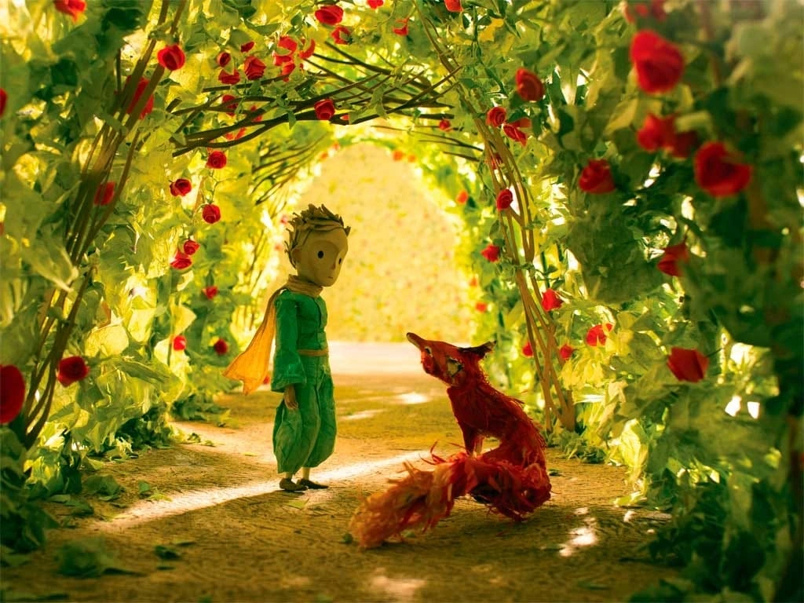
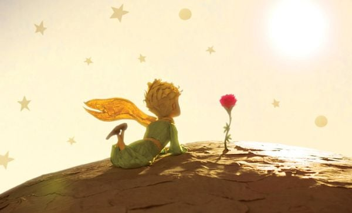

“Hoàng Tử Bé” – Antoine de Saint-Exupéry

Tác giả: Antoine de Saint-Exupéry
1. Tóm tắt nội dung
“Hoàng Tử Bé” kể về cuộc gặp gỡ giữa một phi công bị rơi xuống sa mạc và một cậu bé đến từ hành tinh B-612. Qua hành trình chu du các hành tinh, tác phẩm phơi bày những thói quen kỳ quặc của người lớn và làm nổi bật giá trị của tình yêu, trách nhiệm và sự quan tâm.
Cậu bé rời hành tinh của mình vì mâu thuẫn với Bông hồng, nhưng chuyến đi đã giúp cậu hiểu được ý nghĩa thực sự của sự gắn bó. Cuối cùng, Hoàng Tử Bé chấp nhận rời bỏ cơ thể vật chất để trở về bên Bông hồng.
2. Cảm nhận cá nhân
Với mình, “Hoàng Tử Bé” là câu chuyện dịu dàng nhưng thấm sâu. Bài học từ chú cáo – về sự gắn bó và thấu hiểu – khiến người đọc nhận ra rằng điều quý giá nhất không nằm ở mắt nhìn, mà ở trái tim biết yêu thương.
Mỗi lần đọc lại, mình lại thấy được một góc nhìn mới về sự đơn giản, về cách người lớn thường phức tạp hóa mọi thứ, đánh mất đi trí tưởng tượng. Tác phẩm là lời nhắc nhở nhẹ nhàng về việc cần phải luôn nhìn mọi thứ bằng con mắt của một đứa trẻ.
3. Fun Facts
- Xuất bản năm 1943 tại Mỹ.
- Được dịch sang hơn 300 ngôn ngữ.
- Tác giả là một phi công ngoài đời thực.
4. Trích dẫn hay
“Điều quan trọng nhất chỉ có thể nhìn thấy bằng trái tim. Mắt thường không thể nhìn thấy được.”